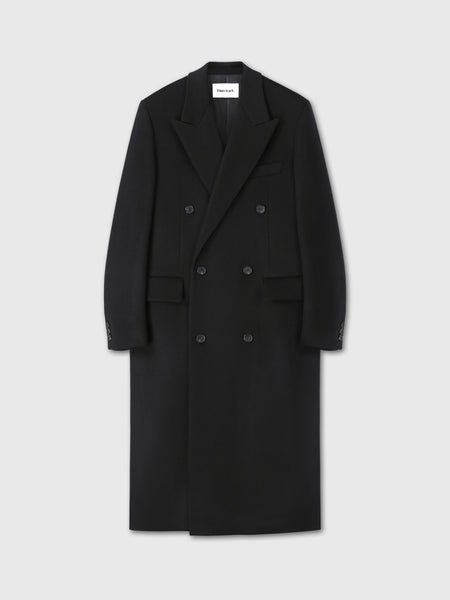
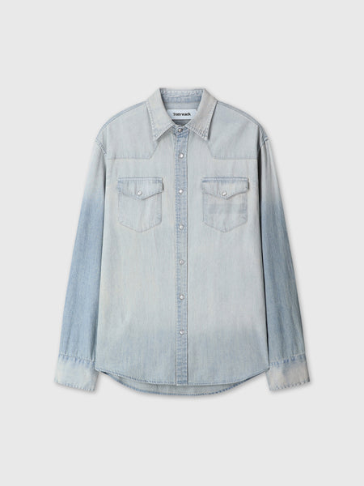
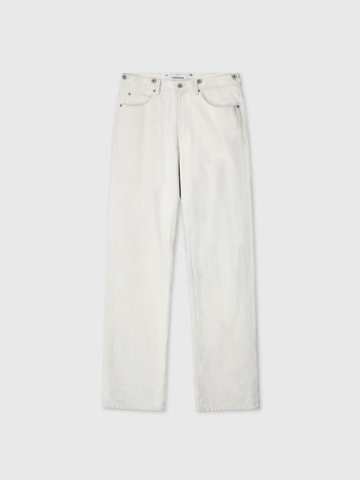
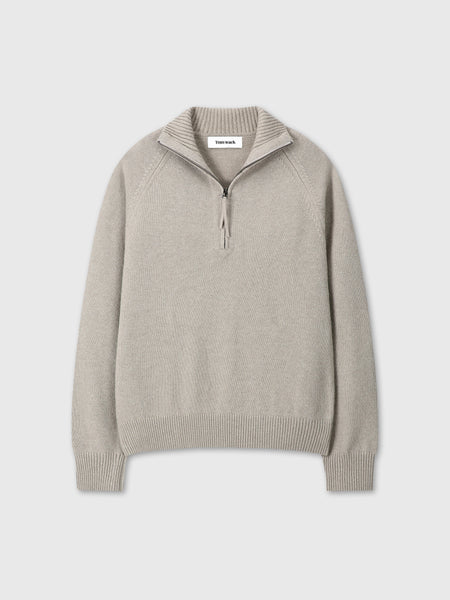
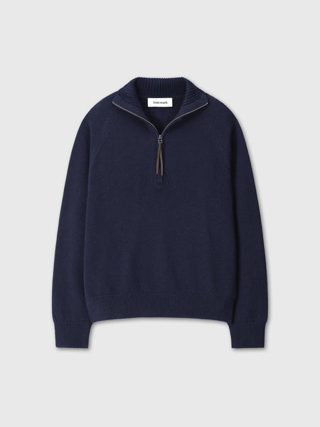
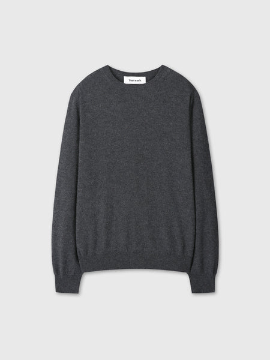

원본 옷장에 합성한 의류 샘플 6개
행거 A5·B3·C6 / 선반 K1·K2·K3. 나머지 의류와 구조는 원본 유지. 앱·DB 미반영.
A5 · 검정 코트 · 왼쪽 A5
원본 / 생성 샘플 (동일 좌표, 확대)상품 정체성 참고용 사진 · 최종 에셋 아님
B3 · 데님 셔츠 · 왼쪽 B3
원본 / 생성 샘플 (동일 좌표, 확대)상품 정체성 참고용 사진 · 최종 에셋 아님
C6 · 에크루 진 · 왼쪽 C6
원본 / 생성 샘플 (동일 좌표, 확대)상품 정체성 참고용 사진 · 최종 에셋 아님
K1 · 샌드 니트 · E1 왼쪽 위
원본 / 생성 샘플 (동일 좌표, 확대)상품 정체성 참고용 사진 · 최종 에셋 아님
K2 · 네이비 니트 · E1 오른쪽 중간
원본 / 생성 샘플 (동일 좌표, 확대)상품 정체성 참고용 사진 · 최종 에셋 아님
K3 · 차콜 니트 · E4 왼쪽 위
원본 / 생성 샘플 (동일 좌표, 확대)상품 정체성 참고용 사진 · 최종 에셋 아님